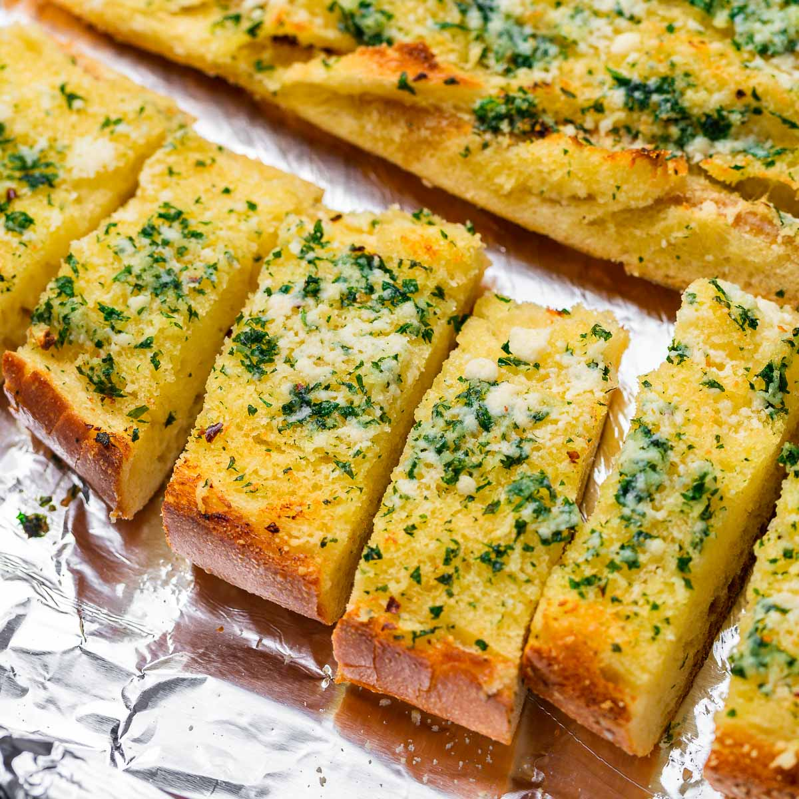

Crispy Garlic Bread

Buttery garlic bread toasted to perfection.
This dish is as simple as it is delectable. The perfect addition to any Italian entree, and a surefire crowd pleaser.
Ingredients
- loaf of french bread
- butter
- garlic salt
- parmesan cheese
- parsley
Steps
- Slice the bread lengthwise into two halves
- Spread butter generously on both halves
- Dust with garlic salt
- Place bread face down on a foil-lined baking sheet and cook at 450 degrees for 5 minutes
- Flip bread and sprinkle parmesan cheese on both halves
- Cook for an additional 3-5 minutes until the edges are golden brown
- Garnish with parsley